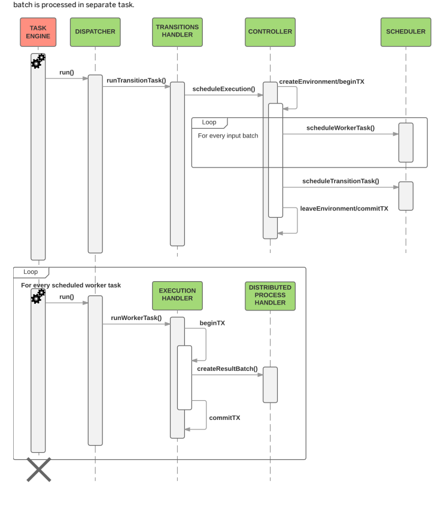
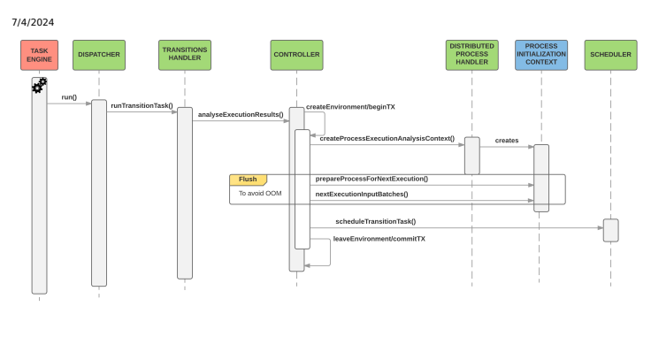
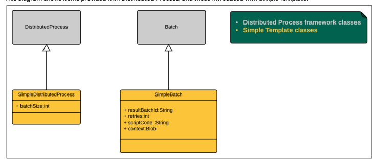
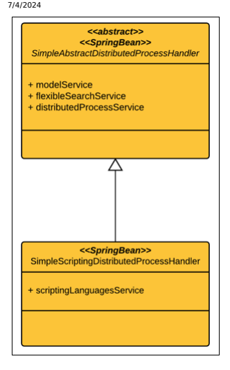
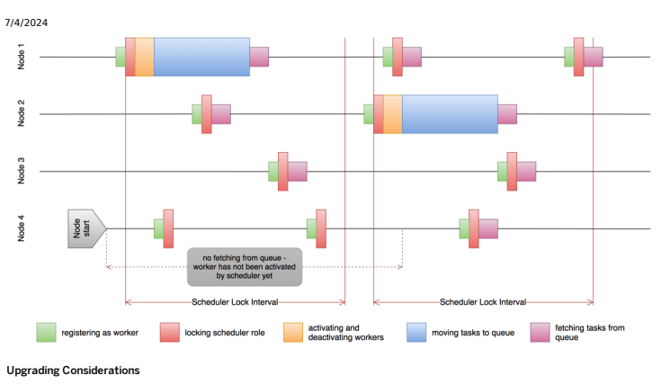
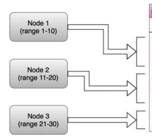

The SAP Commerce Task Service enables you to schedule time-based or event-based actions, even in a cluster environment. Compared to the existing cron job functionality, tasks should be seen as a simple and easy way of achieving the same outcome without the overhead of the additional cron job features.
Tasks are a method of scheduling actions. With tasks, it is possible to dene Spring-based actions which are triggered at dened times or upon triggering of certain events. Compared to CronJobs, tasks are a more lightweight scheduling framework, offering only a minimal set of functionality, but greatly reducing the complexity of implementing actions.
Tasks provide Task and TaskCondition item types, which hold all necessary information about one scheduled execution of the specied action bean. This way all actions to be executed are stored inside the database.
Tasks offer two ways of scheduling: With the time-based scheduling, the task item holds the execution time at which the action bean, is triggered.
With the event-based scheduling, the task holds at least one task condition item to specify the events required to be fullled before triggering the action. Each task may further specify an expiration time. This way the system automatically fails the scheduled action if the called for events have not arrived yet.
Tasks process scheduled actions on any available Platform By spreading action execution across the whole cluster, the task functionality provides a robust and reliant way of action processing. Even if a single node crashes, the overall processing will still keep working. It is also possible to pin a scheduled action down to a specic cluster node. If that is the case, only this specic node will execute it. cluster node. This means that due actions are executed by the rst node able to fetch and lock it. Normally, all Platform cluster nodes automatically start processing due actions. In some cases it may be necessary to exclude some of these nodes from doing so, which is also possible with the task functionality. There is also a way to disable task processing on per node basis. It is the only supported way to block task processing when using id autodiscovery. For more information about id autodiscovery, see Cluster Improvements and ID Autodiscovery.
To disable task processing on a node, set the task.engine.loadonstartup property to false (it is true by default).
# disable task processing on a given node task.engine.loadonstartup=false In a most common scenarios this property will be put in HYBRIS_RUNTIME_PROPERTIES le, or in HYBRIS_OPT_CONFIG_DIR.
The task.excluded.cluster.ids property was the previous way to block task execution on specific nodes. It is still supported provided that you do not use new id autodiscovery. If you try to use both, id autodiscovery and task.excluded.cluster.ids, you will get a warning and the ids you want to exclude will not be taken into account - tasks will run on all nodes that have task.processing.enabled or task.engine.loadonstartup set to true.
The task functionality was designed to be used in a ServiceLayer-based application right from the start. It provides a service for scheduling new actions and triggering events. Actions are defined as Spring beans inside the usual (core) Spring configuration files, which are provided by each extension.
The diagram shows all available task types and services.
Note that model classes are not complete since their attributes completely match the underlying item attributes.
Actions include your business logic. Learn how to define and schedule them.
To enable or disable the task functionality, use the task.engine.loadonstartup property instead of task.processing.enabled, which you may have used so far. By default, task.engine.loadonstartup is set to true, which enables the task functionality. Remember that task.engine.loadonstartup takes precedence, so make sure it is set to the same value task.processing.enabled was set to earlier.
This is custom documentation. For more information, please visit the SAP Help Portal To dene an action, it is sufficient to create a class implementing the TaskRunner interface. It denes two methods for being triggered and for error handling. The task item model is always provided as invocation context.
public class MyTaskRunner implements TaskRunner[TaskModel] { public void run(TaskService taskService, TaskModel task) throws RetryLaterException { // business code goes here } public void handleError( TaskService taskService, TaskModel task, Throwable error) { // this is called if a error occurred or a scheduled action could not be executed // in time } } This action must be dened inside one extension core Spring conguration le.
Note that putting actions inside a web Spring conguration will not work! It is necessary to put them into the core application context (one for each tenant) dened by core Spring conguration les. Of course it is also very easy to wire other required services to these actions simply using Spring.
Time-based actions are simply scheduled by creating a new TaskModel that points to the requested action bean and holds the correct execution time.
ModelService modeService = ... TaskService taskService = ... // create model TaskModel task = modelService.create(TaskModel.class); // configure it task.setRunnerBean("MyRunner"); // the action bean name task.setExecutionDate( new Date() ); // the execution time - here asap // schedule taskService.scheduleTask(task); With event-based scheduling, additional item models must be created to specify these events.
// create models TaskModel task = modelService.create(TaskModel.class); TaskConditionModel cond = modelService.create(TaskConditionModel.class); // configure them task.setRunnerBean("MyRunner"); // define event name cond.setUniqueID("MyEventArrived"); // add to task task.setConditions( Collections.singleton( cond ) ); // schedule taskService.scheduleTask(task); This is For more the SAP Help 4 The system will now wait until an event with the specied (unique) name has been triggered before the action is executed. In case an expiration time has been specied and the event has not arrived in time, the system will trigger the error handling method of the action bean to signal that this specic task cannot be executed properly any more.
Events are generally triggered externally by calling the specic method upon the task service. An event is identied by its unique name. Triggering it requires to pass this unique name - no condition or task item models need to be fetched for that.
TaskService taskService = ... // trigger the event taskService.triggerEvent( "MyEventArrived" );
Note that this method will not check if there actually is a matching condition yet. For details, see the Premature Events section.
Once a task has been scheduled, it resides inside the database until it is processed. Sometimes it may be required to limit the time frame within which it is allowed to be performed in order to avoid working with outdated data. Alternatively, it may be useful to be notied if a scheduled task has been on hold too long, especially if the task is not time based but waits for events to occur. Therefore, with the task item model it is possible to specify an expiration time after which the system will automatically fetch the task, call the action bean error handling method, and mark the task as failed. Instead of one timeout per scheduled task, an expiration time can be specied for each condition belonging to a task. This way it is possible to make some event conditions fail earlier than others, according to their expected arrival time.
ModelService modeService = ...
TaskService taskService = ...
// create models TaskModel task = modelService.create(TaskModel.class); TaskConditionModel cond1 = modelService.create(TaskConditionModel.class); TaskConditionModel cond2 = modelService.create(TaskConditionModel.class); // ... // set single expiration date for the whole task: now + 10min task.setExpirationDate(new Date( System.currentTimeMillis() + (10 60 1000) )) // set expiration date for conditions cond1.setExpirationDate(new Date( System.currentTimeMillis() + (2 60 1000) )) cond2.setExpirationDate(new Date( System.currentTimeMillis() + (6 60 1000) )) // ...
Have a look at the Error Handling section for instruction on how to get notied that a timeout has occurred.
In previous sections we described actions that were triggered because we specied an execution time or event conditions. This may be sufficient for actions that don't require any information (like performing cleanup jobs) but is not adequate where an action should actually process some previously dened information.
This is For more the SAP Help 5 To pass information, the task item model allows us to attach a context object that is serialized and stored inside the database, too.
// create model TaskModel task = modelService.create(TaskModel.class); // configure it task.setRunnerBean("MyRunner"); // the action bean name task.setExecutionDate( new Date() ); // the execution time - here asap task.setContext( new MyContext(...) ); // schedule taskService.scheduleTask(task); // --------------------------- // In action bean: retrieve it // --------------------------- public void run( TaskService taskService, TaskModel task) throws RetryLaterException { MyContext ctx = task.getContext(); // business logic } Often, required data is stored inside an item model. Again, it is possible to attach such an item to the task item model.
UserModel requiredUser = ... // ... task.setContextItem( requiredUser ); // ... // --------------------------- // In action bean: retrieve it // --------------------------- public void run(TaskService taskService, TaskModel task) throws RetryLaterException { UserModel user = (UserModel)task.getContextItem(); // ... }
Learn about advanced concepts related to the task functionality, such as transactions, task life cycle, error handling, premature events, and other concepts.
All actions are performed inside their own transaction. This means that changes made inside the action bean run method are rolled back in case of an error. However, in some circumstances it may be required to let a business exception reach the outside but also commit the transaction and deal with the exception outside. Therefore, it is possible to make the task engine not roll back the changes made during a task which failed. To implement this, add an execute method which allows you to dene a set of permitted exceptions that are passed without rolling back the transaction.
public void run(TaskService taskService, TaskModel task) throws RetryLaterException { if( ... cannot perform ...) { … save some crucial data - we don't want to lose them … RetryLaterException ex = new RetryLaterException("cannot perform"); ex.setRollBack(false); // this tells the engine to commit regardless of the exception throw ex; } else { // perform... } }
Scheduled actions are stored in the database as task items. These items remain in the database as long as their target action hasn't been performed yet or Retry has been requested (see below). Once an action has been performed, either successfully or even abnormally, the backing task item is removed from the database.
Although the task item model already enables the user to store a context object or a context item reference, it may sometimes be preferable to declare all required context information as attributes. Therefore, the most exible solution is to declare a custom task type. The main advantage is type safety for reading and writing context data. Also, no separate item is required to carry this information.
<itemtype code="NewCustomerTask" jaloclass="NewCustomerTask" extends="Task">
<attributes>
<attribute qualifier="firstName" type="java.lang.String">
<persistence type="property"/>
</attribute>
<attribute qualifier="lastName" type="java.lang.String">
<persistence type="property"/>
</attribute>
<attribute qualifier="email" type="java.lang.String">
<persistence type="property"/>
</attribute>
...
</attributes>
</itemtype>
Scheduling is still simple - only the task model class needs to be changed:
ModelService modelService = ...
TaskService taskService = ...
NewCustomerTaskModel task = modelService.create(NewCustomerTaskModel.class);
task.setRunnerBean("NewCustomerTaskRunner");
task.setExecutionDate(new Date()); // set context information directly
task.setFirstName("foo");
task.setLastName("bar");
task.setEmail("foo.bar@xyz.com");
taskService.scheduleTask(task);
---------------------------
In action bean: retrieve it
---------------------------
public void run(TaskService taskService, TaskModel task) throws RetryLaterException {
String firstName = ((NewCustomerTaskModel)task).getFirstName();
// ...
}
Sometimes when an action is triggered, it may decide that it cannot perform or complete its work due to temporary problems (for example webservice unreachable). Throwing an error here means that the whole scheduled action is not performed at all and has to be handled (for example restarted) somewhere else.
For such occasions the task functionality provides the retry option. By throwing RetryLaterException, the action bean is allowed to signal that the current task should be put back into the queue of due tasks to be processed again later. It is also possible to specify the time to wait before the task is fetched again.
private static final int MAX_RETRIES = 10; public void run(TaskService taskService, TaskModel task) throws RetryLaterException { if( ... cannot perform ...) { if( task.getRetry().intValue() <= MAX_RETRIES ) { RetryLaterException ex = new RetryLaterException("cannot perform"); ex.setDelay(24 60 60 * 1000 ); // delay for 24h throw ex; } else { throw new IllegalStateException("finally cannot perform after "+task.getRetry()+" retries") } } else { // perform... } } The sample also illustrates how to use the number of retries in order to avoid endless cycles.
Be aware that requesting a retry does not extend a task's expiration date (if specied). If it expires while waiting for a retry, it will be processed as failed in the normal way.
There are a number of errors which may occur and need to be handled:
A scheduled task has expired before being processed. That may happen if there are still unfullled event conditions, or previous attempts to trigger the action ended with RetryLaterException and eventually the expiration time has been met. After the expiration time has passed, the system will fetch the task, call the error handling method, and mark it as failed. The cluster node shuts down abnormally while processing an action. When that cluster node starts up again, the system will automatically detect which actions have not ended normally, call the error handling method, and mark their task items as failed. Of course the action itself might throw an exception. Again, the system will call the error handling method and mark the scheduled task as failed. Once a task item has been marked as failed, it will never be processed again.
public class MyTaskRunner implements TaskRunner [TaskModel] { public void run(TaskService taskService, TaskModel task) throws RetryLaterException { // ... } public void handleError(TaskService taskService, TaskModel task, Throwable error) { if( error instanceof TaskTimeoutException ) { // handle expiration here } else if( error instanceof InvalidTaskStateError ) { // previous task execution ended due to system failure } else { // all other exceptions are coming from action itself ! } } } It is also possible to add a method which will allow execution of changes made during a task which failed. For details, see Transactions.
Events are generally triggered from the outside. This may happen by polling some data regularly using CronJobs or by receiving a web service call. Most likely the data is fetched or arrives from an external system. Occasionally, it may be the case that external data is available and is used for triggering an event before there is a matching scheduled action in form of a task item inside the database. In case such a 'premature' event is triggered while there is no task condition waiting for it, the Task stores the incoming event for an unlimited time. The rst to-be-scheduled task holding a condition matching the event's unique name consumes the premature event immediately.
Note that triggering the same (by unique ID) premature event multiple times before a task is scheduled has no effect other than triggering it only once.
Normally, the task engine is started and shut down automatically during Platform startup or shutdown. In addition, there is also an administrative API for the task engine. With this API, it is possible to check whether the engine is currently running, to start or stop it, and even to request to re-poll tasks from the database. Of course these actions should be used with care.
TaskService taskService = ... TaskEngine engine = taskService.getEngine(); // check state boolean running = engine.isRunning(); // stop engine.stop() // start engine.start() This is For more the SAP Help 9
// repoll task queue on current cluster node engine.repoll() // repoll task queue on a specific cluster node (12) engine.triggerRepoll( Integer.valueOf(12) );
To nd out more about task scripting, see Task Scripting.
Task Scripting The Cronjob Service The SAP Commerce processengine
There are some parameters that you can use to increase the task service performance or tune up its behavior.
Platform may process tasks very fast and poll the database to retrieve new tasks immediately. Since the task engine queues only a small portion of retrieved tasks, the number of processed tasks per poll is small too. As a result, the task engine performance may drop drastically because it spends most of the time on retrieving another batch of tasks.
You can remedy this by setting the task.polling.interval.min property to an appropriate value. This value denes the minimum time interval (in seconds) between subsequent polls. As a result, within one interval you can process both the queued tasks and then the tasks buffered in the latest poll until the buffer expires. The buffer includes tasks that were retrieved from the database but have not been queued. The size of the buffer is dened by the task.engine.query.tasks.count and task.engine.query.conditions.count properties. The buffer expiration time is calculated during a database poll. The calculation is based on the task.polling.interval.min property value. The default value is task.polling.interval.min=10.
Platform may start to poll the database to retrieve tasks during Tomcat startup even when not all servlet contexts are initialized. To postpone polling the database for tasks until all servlet contexts are started, set the task.polling.startup.delay.enabled property to true. The default value of this property is false.
There is a distinction introduced between old and new tasks. It allows you to maintain performance by adapting to a situation when there are many frozen tasks (tasks waiting for some condition to be met). If frozen tasks haven't been executed for a considerably long period of time, you could consider them to be old and decide it is not efficient for the task engine to search for them in each query. In such a case, you can use the task.engine.query.full.interval property to tune the task engine to search for new tasks more often than for old tasks. The task.engine.query.full.executiontime.threshold property serves as a threshold dividing tasks into old and new.
The task.engine.query.full.executiontime.threshold property denes a threshold that divides tasks into new and old. The value of the property is a number of hours counted into the past from now. Platform considers tasks to be old when their execution start time is before the current time, minus the property value. Tasks whose execution start time is after the current time minus the property value are considered to be new. For example, if you set the property to 10, all tasks with execution start time before now, minus 10 hours are considered old. Tasks with execution start time scheduled after now, minus 10 hours are considered new. If the property value is 0 (default) or negative, all tasks are considered to be new and are always queried:
task.engine.query.full.executiontime.threshold=0 You can change the value at runtime. It is not necessary to restart the application to apply the new value.
Interval for Querying Old and New Task The task.engine.query.full.interval property denes how often the task engine queries the full table instead of querying only new tasks.
If you set the property to 0 (default), every query searches for old and new tasks: Property default value task.engine.query.full.interval=0 If you set the property to 5, for example, only every 5th query searches for old and new tasks. The other 4 queries search for the new tasks only. You can change the value at runtime. It is not necessary to restart the application to apply the new value.
With the processengine.process.log.dbstore.enabled property set to true, the task engine task logger persists a log le in the database. The le contains logs gathered as a result of task engine processing tasks.
By default, the property is set to true: processengine.process.log.dbstore.enabled=true You can switch off storing processing logs by setting processengine.process.log.dbstore.enabled to false.
Distributed processing is a solution for leveraging the whole cluster to perform some tasks. The idea behind distributed processing is to split one huge task into smaller tasks called batches and use the task engine to execute them. To execute operations in parallel, a synchronization point is required to analyze the execution and decide what to do next. To allow those synchronization points, the Distributed Process works in a turn based manner. A single turn consists of multiple tasks executed in parallel and one task waiting for them. The waiting task is responsible for analyzing execution results and for making a decision about further processing. The following diagram shows an overview of a single turn:

The whole execution of a distributed process is divided into four phases. Here is an overview of all the phases and the transitions between them:
 As you can see on the diagram all phases except the
creation phase are executed by the task engine and so they can be distributed across cluster nodes. It is important
to notice that the execution phase might reoccur. The decision whether to nish or continue execution is taken during
the analysis phase. The Distributed Process is based on SAP Commerce items. It uses the task engine that is also
persisted. It allows a distributed process to be continued even after a node failure. If you want to use distributed
processing, all you need to do is to implement
de.hybris.platform.processing.distributed.defaultimpl.DistributedProcessHandler. This interface allows you to fully
control a distributed process. Also see Simple Template for Distributed Process to nd out how to easily implement
and set up processing of workload split into batches and distributed across nodes.
As you can see on the diagram all phases except the
creation phase are executed by the task engine and so they can be distributed across cluster nodes. It is important
to notice that the execution phase might reoccur. The decision whether to nish or continue execution is taken during
the analysis phase. The Distributed Process is based on SAP Commerce items. It uses the task engine that is also
persisted. It allows a distributed process to be continued even after a node failure. If you want to use distributed
processing, all you need to do is to implement
de.hybris.platform.processing.distributed.defaultimpl.DistributedProcessHandler. This interface allows you to fully
control a distributed process. Also see Simple Template for Distributed Process to nd out how to easily implement
and set up processing of workload split into batches and distributed across nodes.
The creation phase is the only phase that is executed on the caller thread. It is important (of course if possible) to make it really quick to not block the user thread. Because it is blocking, it is the only phase that can access node specific local environment
such as the file system or environment variables. Here is a sequence diagram showing how the process is created:

The starting process is not a separate phase nevertheless it is also important to know how it works.


start() Initialization Phase

This is custom documentation. For more information, please visit the SAP Help Portal
The execution phase is responsible for taking all input batches for current turn and producing result batches from them. Each

Analysis takes place after each turn. It must take a decision whether the process is finished or whether it should be continued in the next turn. If it must be continued, the analysis phase should create, based on the results, input batches for the next execution turn.

The Distributed Process framework allows you to process some of your workload on the whole cluster. Simple Template for the Distributed Process framework allows you to easily implement and set up workload processing, and use it for your custom applications. It supports processing of workload that can be split into batches and may require possible retries for failed tasks.
Simple Template provides a set of technical classes and interfaces that must be extended, implemented, or just declared in a Spring context to work. You can also control the Simple Template default behavior using properties it comes with.
Crucial Classes and Interfaces These are key classes provided with Simple Template: SimpleAbstractDistributedProcessHandler is a main class that controls the whole ow of a distributed process execution. It is an abstract class that implements DistributedProcessHandler. Simple Template provides two concrete classes that extend SimpleAbstractDistributedProcessHandler: SimpleDistributedProcessHandler provides implementation that operates directly on the SimpleBatchProcessor interface. SimpleBatchProcessor executes logic for individual batches. Register this class under a unique ID in a Spring context to set up a distributed process.
SimpleScriptingDistributedProcessHandler provides implementation that executes logic for individual batches from an existing Script via Scripting Engine. It doesn't require any interaction with a Spring context. For details, see Scripting Engine SimpleBatchProcessor is an interface that you must implement and inject into SimpleDistributedProcessHandler via Spring. It provides logic responsible for executing a single batch of workload.
SimpleAbstractDistributedProcessCreationData is an abstract class and is the basis for the creation of the whole distributed process. It provides information on batch size, number of retries, and actual data for individual batches. Implement at least one method that returns a stream of SimpleBatchCreationData objects. Simple Template comes with two default concrete classes that extend SimpleAbstractDistributedProcessCreationData:
QueryBasedCreationData provides implementation that operates on a FlexibleSearch query and builds batches from the result. CollectionBasedCreationData provides implementation that operates on any Collection and builds batches from elements of that Collection.
SimpleBatchCreationData is a simple POJO class that is a wrapper around the batch context Object. A context Object is a real input data required for a particular, single batch execution logic. Since that Object is persisted in a technical Batch item in a database, it is required that it implements Serializable interface.
Simple Template comes with two framework items extended from the Distributed Process framework: SimpleDistributedProcess provides the additional batchSize attribute SimpleBatch provides the additional resultBatchId, retries, and context attributes
These are Spring beans provided with Simple Template: abstractSimpleDistributedProcessHandler By default, Simple Template has a registered abstract Bean of the SimpleDistributedProcessHandler class. It enables you to set concrete Beans of the SimpleDistributedProcessHandler class in the most convinient way. All concrete Beans must refer to this Bean as a parent Bean.
simpleScriptingDistributedProcessHandler is responsible for handling execution of a distributed process with use of existing Script that contains business logic for individual batches.
Simple Template comes with two properties that can control the behaviour of a distributed process: The distributed.process.simple.template.max.batch.retries property sets the number of retries for single Batch execution logic. Each time execution throws an exception, a particular batch is scheduled for a next turn until the max number of retries is reached. After that, the whole process is considered as failed. The property default value is 3.
The distributed.process.simple.template.batch.size property sets a batch size. The default value is 100.
For convenience, Simple Template comes with an easy to use implementation of SimpleAbstractDistributedProcessCreationData called QueryBasedCreationData. This implementation allows you to use FlexibleSearch to query the database for any result and then divide it into batches and build a Stream of SimpleBatchCreationData objects for further processing. By default, query to the database is executed without pagination, so the whole result is read into the memory and then divided into batches internally. However, you can use the database pagination mechanism. To enable it, use the useDatabasePaging() method as follows: final QueryBasedCreationData processData = QueryBasedCreationData.builder(flexibleSearchService) // .withQuery("SELECT {PK} FROM {Title} ORDER BY {code}") // .useDatabasePaging() // .withHandlerId("titlesProcessing") // .build(); This is For more the SAP Help 17 Caution Keep in mind that you are responsible for providing a proper ORDER BY clause to the query.
Sometimes it is useful to execute some logic before running a FlexibleSearch query. For instance, to set some settings into a session, provide a function into QueryBasedCreationData. It implements the QueryHook interface: final QueryBasedCreationData processData = QueryBasedCreationData.builder(flexibleSearchService) // .withQuery("SELECT {PK} FROM {Title}") .withHandlerId("titlesProcessing") // .withBeforeQueryHook(() -> sessionService.setAttribute("foo", "bar")) // .build();
If you have some Collection of elements you want to process, for instance a List of PKs, it is better to use another implementation called CollectionBasedCreationData. It provides a simple batching strategy for any Collection of data: // assuming Title PKs are obtained somewhere earlier in a code final List [PK] myTitles; final CollectionBasedCreationData testProcessData = CollectionBasedCreationData.builder() // .withElements(myTitles) // .withHandlerId("titlesProcessing") // .build();
By default, Simple Template creates and operates on a SimpleDistributedProcessModel item as the main process object. Sometimes it is useful to extend that item and enrich it with custom attributes. Both QueryBasedCreationData and CollectionBasedCreationData provide methods to set a custom process model class. The following example shows how to do it: // Assuming CustomSimpleDistributedProcess is a name of a custom process item final QueryBasedCreationData testProcessData = QueryBasedCreationData.builder() // .withQuery("SELECT {PK} FROM {Title}") // .withHandlerId("testSimpleDistributedProcessHandler") // .withProcessModelClass(CustomSimpleDistributedProcessModel.class) // .build(); final CustomSimpleDistributedProcessModel process = distributedProcessService.create(processData); // now you have possibility to set some custom attributes before process start process.setCustomField("foo"); // you need to save it modelService.save(process); // run as usual distributedProcessService.start(process.getCode());
Learn how to use Simple Template for Distributed Process by following provided example.
In the example, we want to: Query the database for a list of some Items Execute some complicated computation on data that comes with each instance of that Item Remove all the Items we found We should expect the query to return millions of records. Searching the database in our case would be an expensive process. This is why we'd like to leverage the whole cluster to do the work fast.
First, we decide on how to query an Item, and what is the safest and minimum set of data we want for a single batch execution. Remember that between turns, a distributed process stores data in a Blob object in a database, so it must be serializable. For simplicity, we use a List of PKs, and the title item. The QueryBasedCreationData class helps us to set up the whole process. By default, QueryBasedCreationData produces exactly a List of PKs as a result of the query. First, we implement the logic that is to be executed on a single instance of our TitleModel. Since SimpleBatchModel has a context attribute, we can get it and simply cast to the List of PKs, and nally convert it to the TitleModel. Then we can play with it. This is an example implementation of the SimpleBatchProcessor interface we have to provide: public class ItemProcessingTestBatchProcessor implements SimpleBatchProcessor { private ModelService modelService; @Override public void process(final SimpleBatchModel inputBatch) { final List [PK] pks = asListOfPks(inputBatch.getContext()); pks.stream().map(pk -> modelService. [TitleModel] get(pk)).forEach(title -> { // Do some very complicated logic here with a TitleModel modelService.remove(title); }); } private List [PK] asListOfPks(final Object ctx) { Preconditions.checkState(ctx instanceof List, "ctx must be instance of a List"); return (List [PK]) ctx; } @Required public void setModelService(final ModelService modelService) { this.modelService = modelService; } }
Next, we register a new bean of the SimpleDistributedProcessHandler class in a Spring context, and inject our newly created implementation of the SimpleBatchProcessor interface into it: This is For more the SAP Help 19
<bean id="titlesProcessing" class="de.hybris.platform.processing.distributed.simple.SimpleDistribut
<bean id="itemProcessingTestBatchProcessor" class="de.hybris.example.ItemProcessingTestBatchProcessor">
<constructor-arg ref="modelService"/>
</bean>
To prepare the process, we provide a concrete instance of SimpleAbstractDistributedProcessCreationData. We use the QueryBasedCreationData class as our implementation. This class comes with a Builder that allows for an easy setup.
Since the QueryBasedCreationData class needs FlexibleSearchService to work, we make sure we have it injected into our class. We start the whole process via DistributedProcessService, and wait for a result: final QueryBasedCreationData processData = QueryBasedCreationData.builder() // .withQuery("SELECT {PK} FROM {Title}") // .withHandlerId("titlesProcessing") .build(); final DistributedProcessModel process = distributedProcessService.c distributedProcessService.start(process.getCode()); distributedProcessService.wait(process.getCode(), 100); We have now created an instance of the QueryBasedCreationData class. We instructed it to use FlexibleSearch to query for all existing title items in the system. We instructed it also to use the previously registered SimpleDistributedProcessHandler under Bean ID titlesProcessing. That Bean was set up to use our custom implementation of SimpleBatchProcessor. By default, the batch size is set to 100, and the number of retries is 3.
If you think your case is so complicated that QueryBasedCreationData is not enough for your needs, you can extend the SimpleAbstractDistributedProcessCreationData class and implement your batching strategy yourself. All classes and methods provided by Simple Template for Distributed Process have public or protected access so you can have more control over the whole process. If you think that the problem is even more complicated than just a turn-based process with retries, go for the pure Distributed Process framework and implement it yourself.
You can use the following QueryBasedCreationData's Builder methods to have more control over your distributed process: withProcessId(String) provides a custom process Id withNodeGroup(String) species on which cluster node group you want to execute your process withBatchSize(int) changes the default batch size withNumOfRetries(int) changes the number of retries for an individual batch withQueryParams(Map [String, Object]) passes query parameters for FlexibleSearch withResultClasses(List [Class] [?]) sets up custom result class list; you may nd it handy when querying for a few item attributes withProcessModelClass(Class<? extends SimpleDistributedProcessModel>) sets up a custom process model useDatabasePaging() instructs QueryBasedCreationData to use database level paging This is For more the SAP Help 20 withBeforeQueryHook(QueryHook) provides a custom before-query logic.
See the de.hybris.platform.processing.distributed.simple.SimpleDistributedProcessIntegrationTest test class for examples of using QueryBasedCreationData.
You can set up QueryBasedCreationData to use Scripting so that you can write implementation of SimpleBatchProcessor interface in Groovy, upload it in runtime, and execute the whole distributed process.
To use Scripting for our example, we rst create a script in Groovy: import de.hybris.platform.core.PK import de.hybris.platform.processing.model.SimpleBatchModel import de.hybris.platform.processing.distributed.simple.SimpleBatchProcessor class TestBatchProcessor implements SimpleBatchProcessor { def modelService public void process(final SimpleBatchModel inputBatch) { inputBatch.context.each { // Do some very complicated logic here with a TitleModel modelService.remove(title) } } } new TestBatchProcessor(modelService: modelService) Next, we save the script in SAP Commerce Administration Console or Backoffice under some code, let's say removeTitlesProcessor. Now we set up our distributed process, and run it via Scripting (you can use Administration Console for it too): import de.hybris.platform.processing.distributed.simple.data.* def data = QueryBasedCreationData.builder().withQuery("SELECT {PK} FROM {Title} ORDER BY {code}").w def process = distributedProcessService.create(data) distributedProcessService.start(process.getCode()) distributedProcessService.wait(process.getCode(), 100)
Notice that we haven't provided information about which handlerId we use when running Scripting based process.
QueryBasedCreationData knows which handler to choose. Whenever you pass a Script code to it, it automatically uses SimpleScriptingDistributedProcessHandler.
See on UML diagrams what Simple Template looks like.
This is For more the SAP Help 21 The following diagram shows Distributed Process interfaces (gray) and Simple Template classes that implement them (yellow).

This diagram shows items provided with Distributed Process, and those introduced with Simple Template:


You can create custom strategies for the task engine to fetch tasks from the database.
AuxiliaryTablesBasedTaskProvider is an example of such a strategy. We created it having a clustered environment in mind. One of the most crucial mechanisms of the task engine is to obtain tasks to process. While the default strategy meets the needs of most scenarios, there may exist cases for which you would like to change it.
The logic responsible for fetching tasks from the database is located in a separate Spring bean, and is executed through the de.hybris.platform.task.impl.TasksProvider interface.
To create a new strategy, implement the TasksProvider interface:
class MyTasksProvider implements TasksProvider {
@Override public List<VersionPK> getTasksToSchedule(
final RuntimeConfigHolder runtimeConfigHolder,
final TaskEngineParameters taskEngineParameters,
final int maxItemsToSchedule) {
final List<VersionPK> tasksToProcess = new ArrayList<>();
// fetch tasks from db
}
Declare it as a Spring bean, and redefine the tasksProvider alias:
my-extension-spring.xml
(...)
<bean id="myTasksProvider" class="MyTasksProvider"/>
<alias name="myTasksProvider" alias="tasksProvider"/>
(...)
The AuxiliaryTablesBasedTaskProvider task fetching strategy is suited for a clustered environment as it solves many obstacles you may nd when using the default task engine strategy. The default task engine strategy for fetching tasks may have some problems when you run SAP Commerce in a cluster with many nodes and there are many tasks waiting for execution. It is so because each node tries to perform the same computationheavy query to fetch tasks to be processed. With a high number of nodes, you can observe the snowball effect: each node adds its own query, which increases the load on the database and slows the execution of the same query for other nodes. As a result, the query takes longer, and it is more possible to "clutch" with queries for other nodes.
Having in mind a clustered environment, we created a strategy that is more suited for such scenarios than the default strategy.
The main difference is that with AuxiliaryTablesBasedTaskProvider each node doesn't store its own queue of tasks to be processed. Instead, the queue is stored in the database in a form of an auxiliary table, and each node fetches tasks from this queue (the query to fetch tasks from the queue is much simpler computation-wise). The queue is lled with an original query, which is executed only by one node at a time, and only if the queue has a low number of tasks waiting to be executed.
In the AuxiliaryTablesBasedTaskProvider strategy, the queue of tasks is stored in the database in a form of an auxiliary table. The design is based on three auxiliary tables, each having different purpose:
The tasks_aux_queue table stores the queue of tasks to be executed. Only tasks that are valid for execution should be in this table.
The tasks_aux_workers table stores the nodes that want to access the queue. This table is used to track whether nodes are active, and what capabilities they have (in regard of nodeId and nodeGroups set for each worker).
The tasks_aux_scheduler table contains only one row. It is used to lock the scheduler role for only one node at a time. It is also used to determine the version of the database scheme for auxiliary tables. This information is used to recreate the tables when needed. The diagram shows an example interaction when using the new strategy. We refer to this diagram to explain the details of the design in sections below.

Once you use the AuxiliaryTablesBasedTaskProvider strategy, the auxiliary tables are created in the database schema.
If you reinitialize such a database with ant, those tables are dropped but aren't re-created.
The AuxiliaryTablesBasedTaskProvider auxiliary tables should not be migrated. They are created and completely managed by the scheduling strategy. They are re-created and filled with proper data from the Tasks table that is created dring initialization.
The AuxiliaryTablesBasedTaskProvider design uses the concept of ranges inside a queue of tasks. Ranges help minimize the number of tasks that are scheduled for processings but at the same time have already been processed by other node.
We call such a task a miss. Each task when inserted into a queue, gets a random number assigned to it within a defined range.
Then each active worker has a range of numbers assigned. The given worker can only access tasks with the numbers within the worker's range. This way, the tasks in the queue are logically distributed among active workers. As a result, the workers fetch different tasks, and the possibility to get a miss while processing the task is minimized.


This is custom documentation. For more information, please visit the SAP Help Portal
The role of a scheduler is crucial for the AuxiliaryTablesBasedTaskProvider design to work properly. A scheduler serves a few purposes. The role of a scheduler is to: deactivate workers, for example nodes that have stopped working for various reasons
activate workers, for example nodes that has just been started assign ranges for workers move tasks from the task table to the queue
The AuxiliaryTablesBasedTaskProvider strategy is based on the concept that only one node can be a scheduler at a given time. Moreover, a scheduler should only perform as often as the task.auxiliaryTables.scheduler.interval.seconds parameter allows it to. To achieve this, the time a scheduler last started is stored in the database in the tasks_aux_master table. It is fetched by each node that seeks to be a scheduler.
Each node checks whether the interval is fullled, and if so, it tries to update the row with an optimistic lock pattern. With that, only one node receives the information that the update succeeded - this node assumes it can perform scheduler tasks. On the diagram above, you can see that only Node 1 and Node 2 succeeded in obtaining the scheduler role. Moreover, Node 2 became the scheduler only when Node 1 nished its role as a scheduler and the interval was long enough.
After obtaining the scheduler role, the node accesses tasks_aux_table. It fetches all the workers, and for each it checks whether its heartbeat is still valid. If not, the worker is deactivated. After that, each worker gets a random range assigned that is used to query the tasks in queue. This also activated the workers that were added since the last scheduler's activation.
If a worker is inactive for longer than dened in the task.auxiliaryTables.worker.removal.interval.seconds property, it gets removed. The scheduler deletes the entry from the tasks_aux_workers table and unlocks all tasks that have been locked for processing in the tasks table (the mechanism of the task engine). For example, in the event of node dying or losing connection to the database, the scheduler automatically recovers tasks that have been locked by the inaccessible node. On the diagram, Node 4 is not fetching for tasks from the queue because it hasn't been activated by the scheduler. Fetching is enabled only after Node 4 has been activated by Node 2.
After updating the tasks_aux_worker records, the scheduler checks the current state of the queue. It counts all the tasks in the queue grouped by nodeId and nodeGroup, and calculates the number of tasks in the queue for a given node. It takes into account the exclusive mode of the node and nodeId and nodeGroups set for each node. If the number of tasks in the queue for any worker is below the threshold then the scheduler moves all valid tasks to the queue. The threshold is calculated by the number of tasks to be fetched by this node multiplied by the task.auxiliaryTables.worker.lowTasksCountThreshold.multiplier property value.
Registering a node as a worker is possible through adding the record in the tasks_aux_workers table, or updating its data.
The registration is done with the interval dened by the task.auxiliaryTables.worker.registration.interval.seconds parameter. During registration, a node updates its heartbeat and sets its capabilities such as nodeId, congured nodeGroups to be processed, and whether the node is on the exclusive mode. All this data is later used by the scheduler to determine whether the node has enough tasks scheduled in the queue.
Each node accesses tasks within the range dened by the scheduler. This is true for workers that aren't in the exclusive mode. If the worker is congured to be in the exclusive mode, it accesses all tasks (regardless of the dened range) that have the proper nodeId or nodeGroup set. This can lead to collisions while processing given task by two or more nodes. Because of that, for fetching tasks from the queue, there is an additional optimistic lock mechanism based on the datetime column called PROCESSING_TIME. A node is only allowed to fetch tasks with the PROCESSING_TIME value lower than the current time.
Then, for each fetched task its PROCESSING_TIME value is increased by the number of seconds determined in task.auxiliaryTables.tasks.lockDuration.seconds. This locks the tasks from being fetched by another node for the given time. If the task doesn't get processed within this time, any other node can fetch it and increase the PROCESSING_TIME once more.
For a better fetching performance, all columns in the task queue are dened as NOT NULL (some databases can't handle indexing rows with NULL values). If a task has no nodeId dened, the value of the NODE_ID column will be -1. If there is no nodeGroup dened for a task, the value of NODE_GROUP will be ---.
See the properties that you can use for a custom task fetching strategy.
| Property | Default | Description |
|---|---|---|
| Value | ||
| task.auxiliaryTables.worker.activation.interval.seconds | 10 | Interval since the current time in node heartbeat is treated as vali |
| task.auxiliaryTables.worker.registration.interval.seconds | 5 | Interval (in seconds) at which eac update (or insert if not existing) i in the auxiliary table. The heartbe to determine whether the node is and working. |
| task.auxiliaryTables.worker.deactivation.interval.seconds 30 | 30 | Interval after which the node is d If the node doesn't update the he during this interval, it doesn't get account when the scheduling tak |
| task.auxiliaryTables.worker.removal.interval.seconds | 150 | Interval after which the node is re the node doesn't update its heart this interval, all tasks assigned t get unassigned. |
| 7/4/2024 Property | Default | Description |
|---|---|---|
| Value | ||
| task.auxiliaryTables.worker.lowTasksCountThreshold.multiplier | 20 | Multiplier of the number of tasks available in the queue for each no base value is equal to task.wo * 2 multiplied by the value of thi If the number of tasks available i for any node is less than the calc amount, then the scheduler tries valid tasks to the queue. |
| task.auxiliaryTables.worker.deleteTasks.maxBatchSize | 100 | Max number of tasks that can be removed from the queue. |
| task.auxiliaryTables.scheduler.interval.seconds | 10 | Interval (in seconds) of how often scheduler can try to ll the task q |
| task.auxiliaryTables.scheduler.cleanQueue.oldTasksThreshold.seconds | 900 | Threshold (in seconds) of task w in the queue. The tasks that have processed within this time are re the queue (if the task is still pres task table, it gets rescheduled ne |
| task.auxiliaryTables.tasks.range.start | 0 | Lowest value of range (inclusive) tasks in queue |
| task.auxiliaryTables.tasks.range.end | 1000 | Highest value of the range (inclus assigned to the tasks in the queu |
| task.auxiliaryTables.tasks.lockDuration.seconds | 20 | Number of seconds that a task in can be locked for processing by |
| task.auxiliaryTables.worker.tasks.count.multiplier | 2 | Multiplier of the number of maxim fetched from database in one wo The base value is equal to runningState.getMaxThrea multiplied by the value of this pr |
| task.auxiliaryTables.delete.schedulerRow.during.update | true | The property decides whether th AuxiliaryTablesBasedTas strategy should remove a schedu during a system update to preve task engine locks during an upgra newer patch. |
| task.auxiliaryTables.tasks.get.retriesIfDeadlock | 1 | In setups where nodeGroups or are used to pin tasks to a speci nodes in large clusters can encou deadlocks while polling tasks fro auxiliary table. The property de additional number of times node for tasks in such situations. Set this property to 0 or to a neg number if you don't want nodes t polling. |